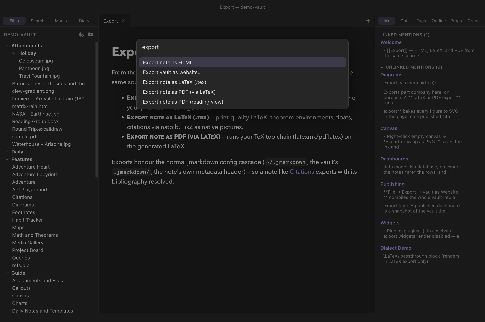
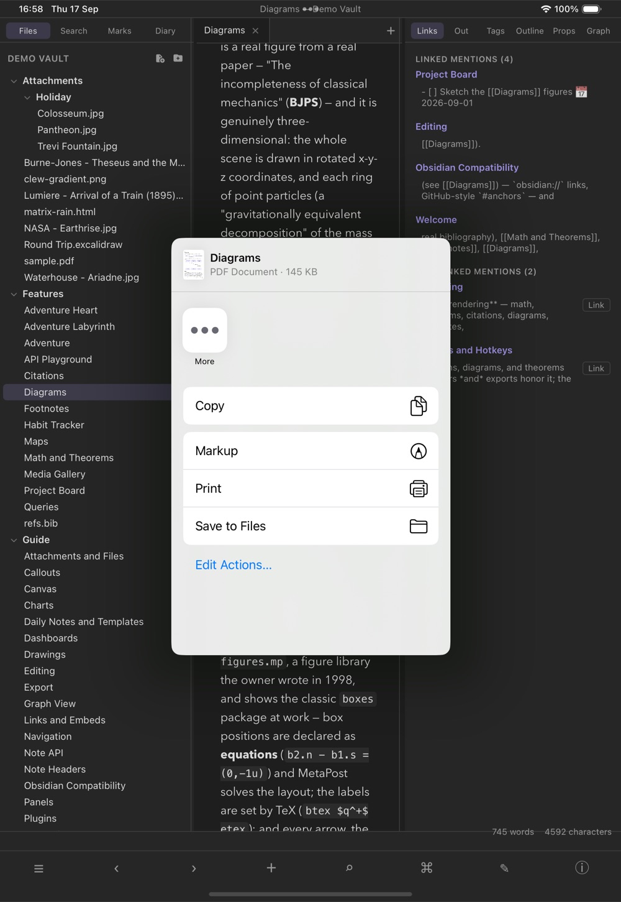

Sharing your work
Exporting notes
Because Clew's reading mode is the jmarkdown typesetting engine — a dual-output engine that compiles the same source to HTML and to LaTeX — exporting is not an afterthought bolted onto a preview. Any note exports to a standalone HTML page, to print-quality LaTeX source, or, when a TeX toolchain is installed, straight to a typeset PDF. The mathematics, theorem environments, citations, and diagrams you see in reading mode survive into print, because print was always one of the engine's two native targets.
Where the commands live
The export commands for the current note sit under File → Export:
- As HTML…
- As LaTeX…
- As PDF (via LaTeX)…
- As PDF (reading view)…
(The last item in that submenu, Vault as Website…,
exports the whole vault at once and has
its own chapter; in a note that belongs to a
book, Book as PDF (via LaTeX), Book as
LaTeX, Book as HTML and Book as PDF
(reading view) build the whole
book, and in a chapter
Proof This Chapter (PDF via LaTeX) typesets that
chapter alone, numbered as in the book —
not in 0.12.0.) The same four commands
are in the command palette (⌘P) as Export note as
HTML, Export note as LaTeX (.tex), Export note as
PDF (via LaTeX) and Export note as PDF (reading view), and
like every command they can be given hotkeys in the
hotkey editor. All four act on
the active note's tab and need a note to be open. From a terminal,
clew export --html|--latex|--pdf <note> runs the
first three on a note you name, writing just the one file beside it
or where --out says; see
Links and the command line.
(Not in 0.12.0.)


Each command opens a save dialog. The suggested destination is the vault
root, with the note's own name and the right extension
(.html, .tex, or .pdf); you can
point it anywhere on disk. Nothing is written until you confirm the
dialog, and cancelling it cancels the export.


One source, three outputs
The point of exporting through the engine — rather than only printing the preview to PDF, as most note apps do — is that each of these formats is generated natively from the Markdown source:
- HTML produces a complete, standalone web page using the engine's own page templates. Mathematics is typeset, citations are resolved against your bibliography, diagrams render, footnotes and cross-references link up. It is a document you can mail to someone or drop on a server as-is.
- LaTeX produces real LaTeX source: theorem
environments become
\begin{theorem}, displayed equations keep their AMS numbering, citations go through natbib, figures become floats, and TikZ pictures are emitted as native TikZ — not as embedded screenshots. The.texfile is yours to edit, include in a larger document, or hand to a journal. By default it is set in Clew's style: EB Garamond, 12pt, A4. - PDF is the LaTeX route carried one step further:
Clew generates the
.texand then runs your TeX toolchain on it. The result is a typeset page in the full LaTeX sense — proper line breaking, real fonts, print-ready mathematics.
Callouts come through both. The HTML draws
them as reading mode does — your own types included, a foldable one
still folding — and the LaTeX makes each a coloured
tcolorbox with the same icon and title, printed open; a
long one breaks across pages with its strip and tint on every page. (In
0.12.0 a note's
export draws only GitHub's upper-case alerts, > [!NOTE]
to > [!CAUTION], as boxes — without a custom title or
folding — and every other callout comes out as an ordinary quote with
its [!type] written out.)
lewis1969 — with no
reference list, and the .tex does not compile as it
stands. Export such a note as PDF (reading view), or export
the LaTeX and load natbib in its preamble yourself
(\usepackage{natbib}; for \fullcite,
bibentry too).
And TeX meets an error, though the PDF is still made, in a note with
an & or # in a list item (or in a theorem
inside one) or with a Mermaid or MetaPost
figure. The & or
# is lost, with a line break in its place, and every piece
of code in the PDF, inline or a block, prints as
<MINTED>. PDF (reading view) is the way round this too.
Diagrams go in a folder beside the file
Some diagrams an export draws itself rather than passing their source
through: a MetaPost figure or a native
Mermaid diagram in LaTeX, the TeX figures in HTML. It keeps what it
draws in a cache of Clew's own, outside the vault, and copies the
figures each file uses into a folder beside that file, named after it —
Report.tex or Report.html gets
Report-figures/, with a folder inside for each kind
(mermaid/, MetaPost/, TiKZ/) —
and refers to them there by a relative path. A kept .tex
or .html therefore stands on its own: move it or send it
with its folder and every figure is still found. A note's
.tex and .html share the one folder; a book's
go into build/ (Building a
book).
The folder is the export's, and safe to delete: the next export makes
it again. Before exporting, Clew moves the folder it made last time to
the Trash, so a diagram since taken out of the note leaves no copy
behind — unless the note's other export still uses it (a
.html beside the .tex), when it is kept. Clew
marks the folders it makes and never touches one it did not: if a
folder of yours already has that name, the figures are not copied into
it, and the export's warnings say so and what to do — rename or move
your folder, then export again. Until you do, the file refers to Clew's
cache on this computer, which is pruned, so it will not travel (from a
restricted vault, to a temporary folder already removed, so its
diagrams do not show).
The cache is in Clew's own data folder, and later exports of the same
vault reuse it; every vault's together is kept under 500 MB, the
figures used least recently going first. A vault you have not
trusted keeps no cache at all: each
export draws into a temporary folder that is removed when it ends.
Either way an export writes nothing into the vault but the file you
asked for and its figures folder. Folders such as mermaid/, MetaPost/
or TiKZ/ that an earlier version's exports left beside
your notes are yours now; Clew does not touch them. (In 0.12.0 an
export keeps its figures in those folders, beside the note, and the
file it writes refers to them there.)
Two PDFs, for two different wishes
As PDF (reading view) is the other thing people mean by "export to PDF": not a typeset paper, but this, on paper — the note exactly as the reading pane draws it, callout colours, syntax highlighting, mermaid diagrams, editable-looking tables and all. Clew prints the very same rendered page the app shows you.
Pick between them by what you want the document to be. The LaTeX PDF is for a paper, a handout, anything whose typography should be the argument's equal — and it needs a TeX toolchain. The reading-view PDF needs nothing installed, takes a second, and looks like Clew: right for circulating lecture notes, sending a colleague what is on your screen, or keeping a copy of a note as you had it.
Three details are worth knowing. It prints in the light theme whatever the app is wearing, because the engine's own styling is written for a light page and a PDF is a paper artifact. Paper size comes from Settings → Appearance → PDF paper size (A4 by default; US Letter, Legal and Tabloid are there too). And a folded embed prints folded — "as displayed" is the promise, so if you want an embed's contents in the PDF, unfold it first.
This is the practical payoff of the design commitment described in the
introduction: a note about, say, a
convergence proof — with numbered equations, a theorem, a couple of
citations from your .bib file — renders in the app, exports
as a web page, and typesets as a paper, all from the file you were
editing a minute ago. Nothing needs to be rewritten for print.
Exports use your jmarkdown configuration
Here is the subtle point of this chapter, and it is worth understanding
because it explains everything else about how exports behave. When Clew
renders a note for reading mode, it runs the engine with a private
configuration of its own — one that loads Clew's wikilink and fence
extensions, points at local assets, and uses Clew's preview template.
When Clew exports a note, it deliberately does not use that
configuration. Instead, the export runs the engine in a fresh process
whose working directory is the note's own folder, which
means the engine's normal configuration cascade applies: the built-in
defaults, then your global ~/.jmarkdown configuration, then
any .jmarkdown/ folder next to the note.
In other words, an export behaves exactly as if you had run the jmarkdown command-line tool on the file yourself (a LaTeX export adds Clew's style, below). That is a feature:
- Exports use the engine's own page and LaTeX templates — including any customisations you have made to them — rather than Clew's app-oriented preview template.
- Your bibliography setup, citation style, and other engine options
from
~/.jmarkdownare honoured. One vault setting reaches an export as well: the vault's bibliography (Settings → This vault), used alongside any the note names itself — see A vault-wide bibliography (not in 0.12.0, where an export reads only the note's own). - Power users can keep a
.jmarkdown/configuration folder next to a set of notes to control precisely how those notes export — different templates for different projects, extra engine extensions, LaTeX preamble additions — without touching how the notes look inside Clew. - A note's own metadata header still applies, as it does in the preview.
One per-vault setting does carry over: if the vault is set to standard Markdown syntax (the normal syntax toggle in Settings → This vault, described in the dialect chapter), exports honour it, so a vault written in ordinary Markdown exports as ordinary Markdown.
And one exception runs the other way: a vault this device has not
trusted exports without
running its notes' code, and from your global ~/.jmarkdown
alone — a .jmarkdown/ folder inside the vault is not read,
since it too could carry code. It makes no PDF via LaTeX at all, which
would run your TeX installation over the vault's own TeX: that is
refused by name, before anything is built, and the notice offers the
reading-view PDF, or trusting the vault, instead
(Troubleshooting; not in 0.12.0).
[[wikilink]] prints as its text, not as a link
— the alias if it has one, else the note's name, or Note >
Heading for a link to a heading. An ![[image]] embed
is included, the image found anywhere in the vault as in reading mode,
at the size a |300 or |300x200 after its name
asks for; the HTML or LaTeX refers to it where it lies, by a path
relative to the exported file, never by its full path on your disk. A
note cannot be embedded: ![[Note]] prints as its name,
with a warning. (In 0.12.0 all three
come out as written.) The ```mermaid,
```leaflet and ```query fences render as plain
code blocks (see Troubleshooting).
Tabbing is the engine's own and exports
whole. (In 0.12.0 a ```tabbing fence is a code block too,
which a PDF via LaTeX prints as <MINTED>, and a
@begin(tabbing) environment loses its tab commands.) The
engine's native forms still work — :::mermaid or
@begin(mermaid) blocks export fine, in LaTeX and PDF as
figures (Diagrams in export), and
everything in
math,
citations, and the engine's own
diagram machinery is native. A note you
intend to publish as a paper is best written leaning on the engine's
own vocabulary; a note leaning on Clew's vault features is better
shared via website export, which does
load all of Clew's extensions.
[[chapter.md]]
standing alone on a line: file inclusion, and it is on by default in
the engine's configuration. In an export, such a line splices the
named file's contents into the document — useful on purpose for
book-style projects (it is the same behaviour the per-vault
jmarkdown project setting brings into the preview), but
surprising if you meant it as a mere link. Add
File inclusion: false to a note's metadata header or a
.jmarkdown/ config next to the note to switch it off.
Clew's style for LaTeX
A LaTeX export and a PDF via LaTeX — a note's or a
book's — come out in Clew's
style: EB Garamond, with Garamond-Math for the
mathematics, at 12pt on A4; microtype; curly quotes from
straight ones; hyphenation in the note's language; quieter lists and
headings, and long quotations a size smaller; emoji in colour; and links
without boxes round them. The language is the Lang in the
note's header, else the one your jmarkdown configuration sets, else
English; and English, a bare en included, is your
region's — British, American, Canadian and so on. A language babel
does not know (ja, say) gets no hyphenation from the style,
and where babel or polyglossia is loaded
already — by your configuration's preamble, or by a book whose chapters
are in other languages (What a
chapter may set for itself) — the style leaves the hyphenation to
it. The paper is US Letter where the region uses it — the United
States, Canada, Mexico and a few others — and A4 elsewhere. The region
is the one in that Lang (en-US, say), or else
your computer's.
The style is added to your jmarkdown configuration, not put in its
place: your configuration's packages and preamble still load, and a
layout it sets — Class options, Geometry — is
kept, the style setting one only where neither your configuration nor
the note's header does. Class options that name no paper
(11pt) still get the region's paper, which the style then
sets through its geometry — unless a Geometry is set as
well, which must name the paper itself. The fonts are the exception:
EB Garamond replaces a main font your configuration sets with
\setmainfont. A note's own header wins over both, as it
wins over any configuration: a key it sets — Class
options, Geometry, Packages,
LaTeX preamble — replaces the style's and your
configuration's whole, so a header's LaTeX preamble takes
the style's fonts and hyphenation with it and leaves LaTeX's default
face.
The style needs the EB Garamond and Garamond-Math fonts. MacTeX
and a full TeX Live have both; BasicTeX does not, and
tlmgr install ebgaramond garamond-math adds them. Without
them the document keeps LaTeX's default face and still compiles. It
needs LuaLaTeX or XeLaTeX too — Automatic compiles it with LuaLaTeX
(Which TeX engine), the one engine that
draws its emoji in colour — so with pdfLaTeX chosen in Settings, or a
note's header saying LaTeX engine: pdflatex, the style is
left out altogether.
Settings → Appearance → Style of LaTeX and PDF
via LaTeX exports turns it off. Your jmarkdown configuration
only (latexExportStyle: none; the
default, Clew (EB Garamond), is clew) exports from
your configuration alone, as before — with nothing configured, LaTeX's
own defaults: Computer Modern at 10pt on US Letter, quotation marks
as typed. (Not in 0.12.0, whose exports are always your configuration
alone.)
PDF export and the TeX toolchain
PDF export needs a TeX installation on your machine — Clew does not
bundle one, because a TeX distribution is enormous and you likely
already have one if you want this feature. On macOS, MacTeX is the
usual choice.
Clew looks for latexmk first, in the standard
installation directories (/Library/TeX/texbin,
/usr/local/bin, and /opt/homebrew/bin). With
it, reruns for cross-references and bibliographies are handled
automatically, which is why it is preferred; without it, Clew runs the
TeX engine itself. latexmk reads only its system-wide
configuration and yours — ~/.latexmkrc, or
~/.config/latexmk/latexmkrc — and the biber it
runs only yours (~/.biber.conf,
~/.config/biber/biber.conf, or on a Mac
~/Library/biber/biber.conf): a latexmkrc or
biber.conf in a note's or a book's folder, its
build/ included, or where you save the PDF, is never read.
(In 0.12.0, which compiles where you save the PDF, latexmk
reads a latexmkrc there too.)
Which TeX engine
Clew also chooses the engine. Left on Automatic, it reads the
generated .tex: a document that loads fontspec,
unicode-math or polyglossia, or runs Lua code —
a \setmainfont in your jmarkdown configuration's LaTeX
preamble, say — is compiled with LuaLaTeX; one that
needs a XeTeX-only package such as xeCJK, with
XeLaTeX; anything else with pdfLaTeX.
Clew's style loads unicode-math,
so a document in it is compiled with LuaLaTeX.
Reading the document catches whatever put the package there — your
configuration, the vault's, the note's own header. For what it cannot
see, Settings → Appearance → LaTeX engine (PDF
via LaTeX export) names one engine for every export. (Not in 0.12.0,
which always runs pdfLaTeX, so a preamble that loads
fontspec stops every PDF via LaTeX.)
A related detail that saves real head-scratching: apps launched from the
Dock or Finder inherit a minimal PATH that usually lacks
the TeX directories, which is why "it works in my terminal but not in
the app" is such a common failure elsewhere. Clew sidesteps it by
extending the PATH it hands to every engine process with
the common TeX and Homebrew locations
(/Library/TeX/texbin, /opt/homebrew/bin,
/usr/local/bin). This matters for anything that shells out
to a TeX program by name: the latex run behind this
export, and your TeX's figure tools when an export sends a figure to
them. (TikZ and MetaPost figures need none of it, in the preview or, by
default, in an export: those engines ship with Clew, as WebAssembly —
see Who draws an export's
figures.) On
Windows, TeX installers put themselves on the PATH, so no
extension is needed.
Mechanically, a PDF export writes the intermediate .tex
into a temporary folder and compiles it there, with the note's own
folder on TeX's search paths, so the note's images and its
.bib are found wherever you save the PDF. Then it delivers
the PDF alone and removes the folder: no .tex,
.aux, .log or figures land beside the PDF.
(In 0.12.0 the .tex is written next to the PDF and
compiled there, and it stays, with LaTeX's own files.)
The compiler runs in nonstop mode with a three-minute timeout (two in
0.12.0). One pragmatic wrinkle: a TeX engine can exit with a non-zero
status on mere warnings, so Clew accepts the run whenever it wrote the
PDF — that run: a PDF an earlier export left at the same path does not
count (in 0.12.0 it did, and could hide a failure). When there is none,
the error says which engine ran, why it was chosen, and the first error
in the compiler's log.
.tex, with its
figures in the folder beside it. If a compile fails or the output
looks wrong, run latexmk on that .tex
yourself, with -pdf, -lualatex or
-xelatex for the engine the export used:
you get the full compiler output, and you can fix or restyle the LaTeX
directly. Exporting to LaTeX first and compiling by hand is exactly
the same pipeline, one step at a time. (In 0.12.0 the PDF export
leaves its .tex, and LaTeX's .log and
auxiliary files, beside the PDF.)
Troubleshooting
- "A PDF via LaTeX is not made in a vault this Mac does not trust"
- The vault is restricted
on this device, and Clew makes no PDF via LaTeX there. The notice
reads in full: A PDF via LaTeX is not made in a vault this Mac
does not trust: it would run your TeX installation over the vault's
own TeX, which can read any file you can. Export the note as PDF
(reading view), or trust the vault (Settings → This vault). On
Windows and Linux it says this computer. Nothing is built,
and Clew does not ask where to save. Export the note as
PDF (reading view), which needs no TeX, or trust the vault in
Settings → This vault and export again.
clew export --pdfprints the same words and exits with1; a book's PDF is refused in the same way. (Not in 0.12.0.) - "No TeX toolchain found"
- Clew could not find
latexmk, or the engine it chose (the message names both), in any of the directories listed above. Install MacTeX (or your platform's TeX distribution) and try again; no restart of Clew should be needed if the tools land in one of the standard locations. - The PDF was not produced
- The LaTeX compile failed hard enough that no PDF appeared. The
message names the engine that ran, why it was chosen, and the first
error in the compiler's log — often enough on its own. A
Fatal Package fontspec Error under pdfLaTeX means the
document needs a Unicode engine that Automatic could not see (a
package of your own that loads
fontspec, say) or that Settings names pdfLaTeX: choose LuaLaTeX there. Otherwise export the same note as LaTeX and compile it in a terminal — the compiler's error messages will name the offending line. Common causes are a missing LaTeX package and raw HTML in the note, which has no LaTeX equivalent. - The PDF via LaTeX is not in EB Garamond
- Clew's style was left out, or could not
find its fonts. Settings → Appearance may say Your
jmarkdown configuration only for the style, or name pdfLaTeX as
the LaTeX engine; a note whose header says
LaTeX engine: pdflatexgets no style, and one whose header setsLaTeX preamblereplaces the style's fonts with its own lines. Or the TeX installation lacks EB Garamond and Garamond-Math: BasicTeX does, andtlmgr install ebgaramond garamond-mathadds them. (Not in 0.12.0, which has no style.) - A Clew fence prints as its source in PDF via LaTeX
- A LaTeX export sets each fenced block as a
mintedlisting named after its language. The Pygments highlighter behindmintedknows none of Clew's own fence languages —```query,```mermaid,```kanban,```dataviewand the like — so such a block is set as plain text: the PDF shows the fence's source, not the table or diagram, and the export warns once for each such language. For what reading mode shows, export the note as PDF (reading view), which prints it fences and all (see Two PDFs), or as a website. (In 0.12.0 the PDF is made without a warning, and each such block prints as<MINTED>: minted could not set it, and only the compiler's log says why — Pygments lexer … is unknown.) - The export's notice lists warnings
- The engine checks every note for what would trouble LaTeX, and an export that found any says so — LaTeX export: dollars, braces. Whatever else the export reported, such as a diagram left out or a note embed printed as its name, is counted at the end (· 1 other), and the ⚠ lists each one in full. The same warnings show as a ⚠ in the status bar while you write; see The status bar for what each kind means and how to silence one. (Not in 0.12.0.)
- Citations show as question marks in the PDF
- The bibliography did not resolve. Check that the note's
bibliography setup (see Citations and
bibliographies) points at a
.bibfile the export can reach from the note's own folder — exports run from the note's directory, not from wherever Clew was started, and wherever you save the PDF, that folder is where its.bibis looked for. - The export looks different from reading mode
- Almost always the configuration-cascade point above: the preview runs with Clew's extensions and per-vault settings, the export runs with yours. Obsidian-style fences and query blocks are the usual suspects, and wikilinks, which print as their text.
- The exported HTML page needs the network
- Unlike Clew's preview, which uses only local assets, the engine's own HTML template may reference assets such as MathJax from a CDN. The page is standalone in the sense of being a single file, but rendering mathematics in the browser can require a network connection, depending on your jmarkdown template configuration.
Reference
| Format | Menu item | Palette command | Produces | Requires |
|---|---|---|---|---|
| HTML | File → Export → As HTML… | Export note as HTML | A standalone .html page from the engine's own
templates, at the location you choose; the diagrams the export
draws go into a -figures/ folder beside it (not in
0.12.0). |
Nothing extra. |
| LaTeX | File → Export → As LaTeX… | Export note as LaTeX (.tex) | A .tex source file; relative graphics resolve
from where it is saved. The diagrams the export draws go into a
-figures/ folder beside it (not in 0.12.0). |
Nothing extra (a TeX installation to compile it later). |
| File → Export → As PDF (via LaTeX)… | Export note as PDF (via LaTeX) | A typeset .pdf, and nothing else (in 0.12.0 the
intermediate .tex and log files remain alongside
it). |
latexmk, or the TeX engine itself, on the
machine. |
| Fact | Detail |
|---|---|
| Working directory | The note's own folder — the normal
jmarkdown config cascade applies (~/.jmarkdown, then a
.jmarkdown/ next to the note, then the note's metadata
header). |
| Not applied | Clew's preview configuration: wikilinks as
links (they print as text; an image embed is included),
```mermaid/```leaflet/```query
fences, local preview assets. |
| Applied | The vault's standard-Markdown-syntax setting; the note's metadata header; all engine-native features. |
| Clew's style (LaTeX, PDF via LaTeX) | On by default:
EB Garamond and Garamond-Math, 12pt, A4 or US Letter by
region, microtype, curly quotes, hyphenation in the
note's language, links unboxed — added to your configuration, whose
main font it replaces; a note's header wins over it. Off with
Settings → Appearance → Style of LaTeX and
PDF via LaTeX exports (latexExportStyle:
none), and left out under pdfLaTeX, chosen in Settings
or a note's header (above; not in
0.12.0). |
| TeX search path | /Library/TeX/texbin,
/usr/local/bin, /opt/homebrew/bin
(latexmk preferred over running the engine); the same
directories are appended to PATH for every engine
process. |
| TeX engine | Automatic: LuaLaTeX for
fontspec, unicode-math,
polyglossia or Lua code, XeLaTeX for XeTeX-only
packages, else pdfLaTeX — or as set in Settings (above; not in 0.12.0, always
pdfLaTeX). |
| TikZ and MetaPost figures | Drawn by Clew's built-in TeX, your installation taking what it cannot draw, with a warning; or all by your installation, as set in Settings. A restricted vault's HTML and LaTeX exports: the built-in TeX alone; its PDF via LaTeX is refused (Who draws an export's figures; not in 0.12.0, always your installation, a restricted vault's PDF included). |
| Compile behaviour | Nonstop mode, three-minute timeout; accepted when that run wrote the PDF, even if the compiler returned warnings. |
See also
- Publishing as a website — exporting the whole vault, with all of Clew's extensions applied.
- How rendering works — what the preview pipeline does differently, and why.
- Math and theorems and Citations and bibliographies — the features that make print export worth having.
- The jmarkdown dialect — including the per-vault standard-syntax switch that exports honour.